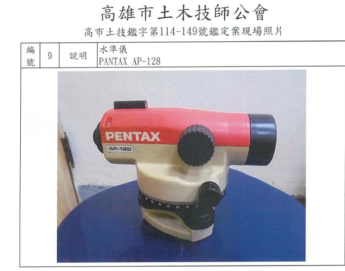

PENTAX AP-128 水準儀公司提供之設備參考照（原圖保留）
供型號辨識；不代表本案測量當日拍攝。
先指定起訖點；同一 BM 回測時，起點與終點選同一點。
新案件預填 BM1＝10.000 m（假設高程），可隨時改為實際值。異 BM 閉合須確認兩端使用相同高程基準。容許值及分配方式由案件指定。
先建立點號，現場再決定中間視或換站前視；讀數不預填。
點號和觀測角色分開：S 點也可作前視、後視轉點。
在 Google 地圖選好範圍後，擷取畫面並回到本頁按 Ctrl+V，或按「貼入剪貼簿圖片」。手機可用「匯入位置圖」選擇截圖。請保留地圖原有來源標示，並填寫底圖來源及截圖日期。
新增點位並選擇「放到圖上」，再點圖面位置。底圖僅供位置示意，不以圖上距離計算測線長度。
本機儲存：檢查中
可用 Safari 分享 → 加入主畫面。離開現場前仍請匯出案件檔。
依實際讀法選中間視、換站前視或終點前視。換站後在同一點讀後視。標圖與拍照可到「點位攝影」由現場人員補做；完整計算在「計算與成果」。
攝影者在水準尺所在點拍照；觀測者可持續留在儀器旁記錄讀數。照片依點號對應，與讀數分開完成。
觀測者先匯出攝影工作檔交給攝影者。攝影者在自己的手機開啟同一網站，從「① 案件與位置」按「開啟案件檔」載入；可拍照並在圖上標點，完成後按「匯出攝影成果」。觀測者按「合併攝影成果」回收新照片、未填的位置與說明；已有讀數與標註不會被覆蓋。不同裝置不會自動同步。
公司設備參考照與本案現場拍攝照片分開記錄。

供型號辨識；不代表本案測量當日拍攝。
原始讀數、暫算高程與改正後高程分列；現場輸入時可專注目前測站。
報告附件預覽 · 可左右滑動查看全部欄位
整份報告含點位圖、原始讀數、閉合檢核、改正後高程、點位照片及設備照片。另請匯出完整案件檔保存可編輯資料及本案圖像原檔。